OLU
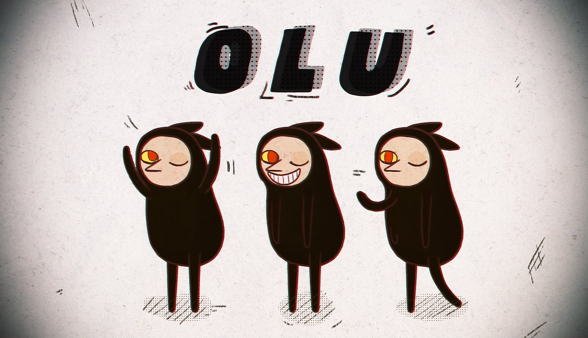
OLU MOBILE PUZZLE GAME
OLU is a single player mobile puzzle game that happens in a world where all the daily appliances such as alarm clocks and hair dryers are operated by tiny mischevious creatures named OLU. These little OLUs live inside all the appliances and secretly help human beings. OLUs are cute, but they are not smart enough, so players have to give them orders and assist them to run all the devices.
Engine: Unity 3D
Role: Lead Game Design, Producer
Collaborator: Xin Hu, Salter Liu, Ching-Shan Chang
DESIGN GOAL
OLU stemmed from the idea that every machine is manually operated by someone hiding in that machine. Our group thought this concept is both fun and promising, and then we started this project.
In OLU, each level is a different object, and we want each level have different a different theme inside the object. This becomes the biggest challenge when I designed all the levels. I discarded more than half of the levels, and below is the design process for part of the level we kept in the game.
ALARM CLOCK
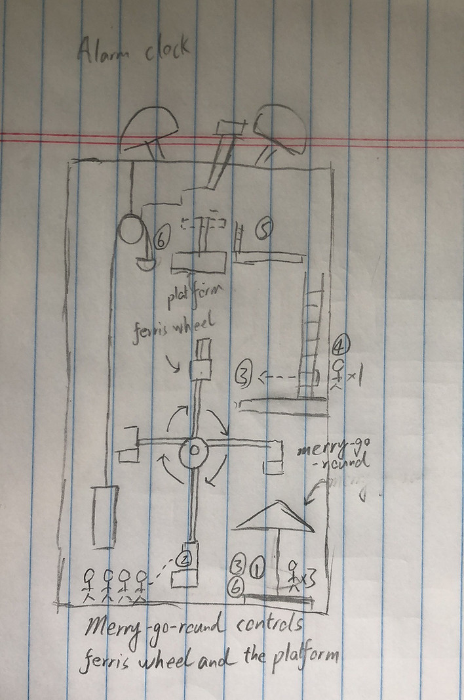
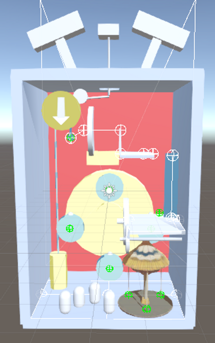
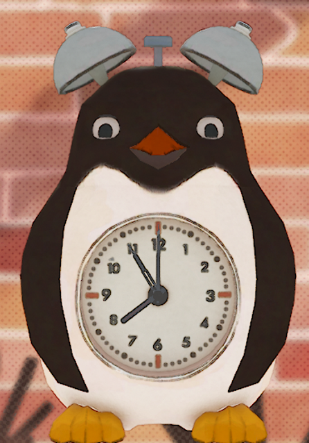
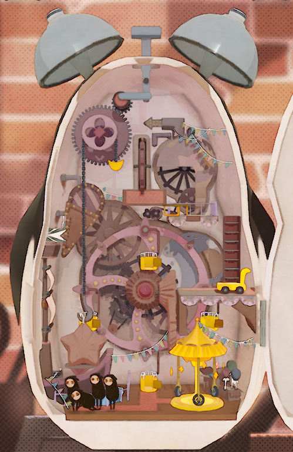
LOCK
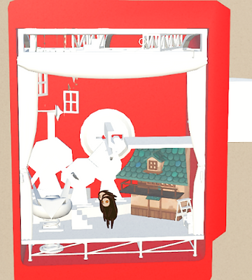
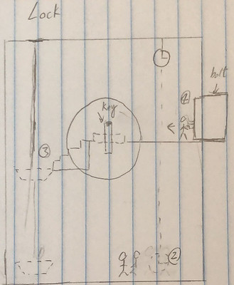
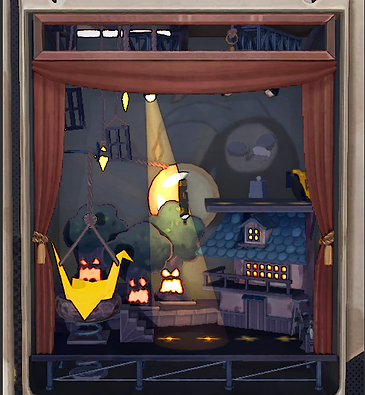
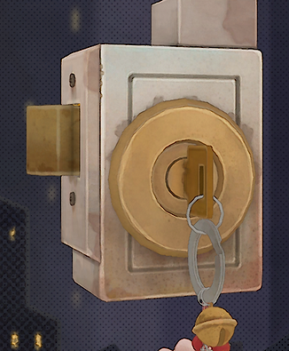
HAIR DRYER
HAIRDRYER
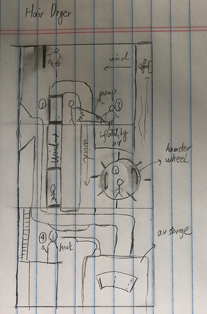
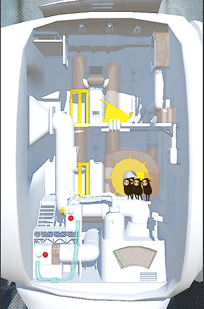
ISSUE & ITERATION
We encountered many issue when designing the interaction system. Unlike most of puzzle game, players are controlling the OLUs instead of clicking on the obects. These made players have difficulty to understand the interaction system.
To solve this problem, we tried several methods. We first reduced the possible command to only single tap and drag and removed selecting specific OLU feature. We also unified the color of all the intractable objects to build a consistent visual language even though we have to sacrifice some aesthetics. To avoid confusion, we removed the ability to move OLUs by clicking on the ground.
After several times of iteration and playtests, the interaction system becomes much better, and players have a clear idea about the results of their commands.
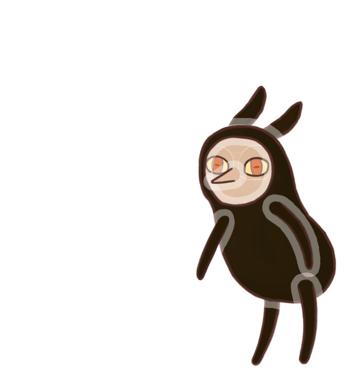
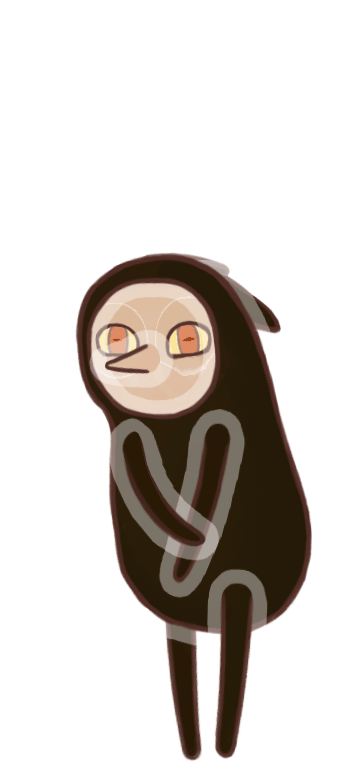
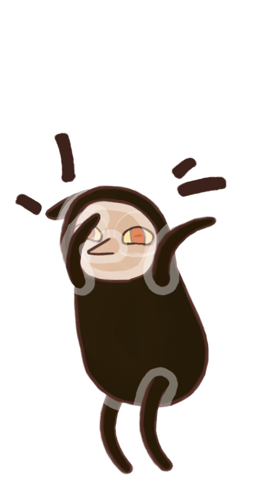
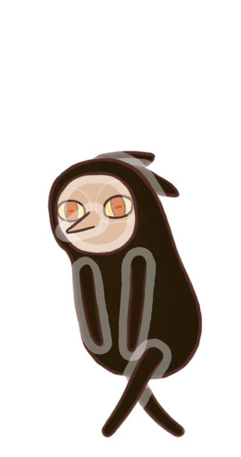